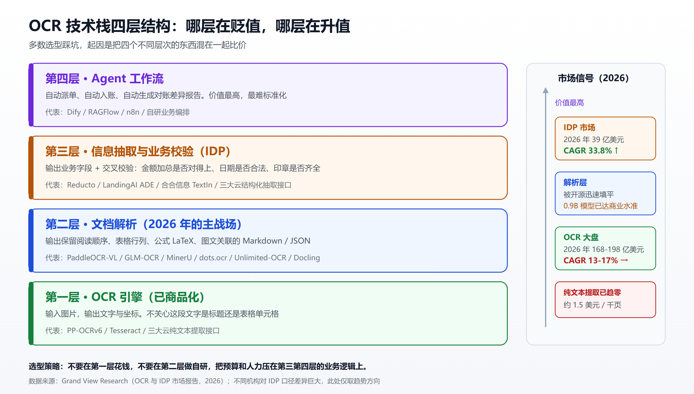
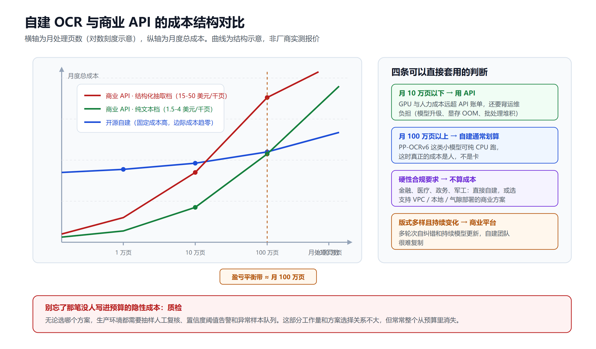
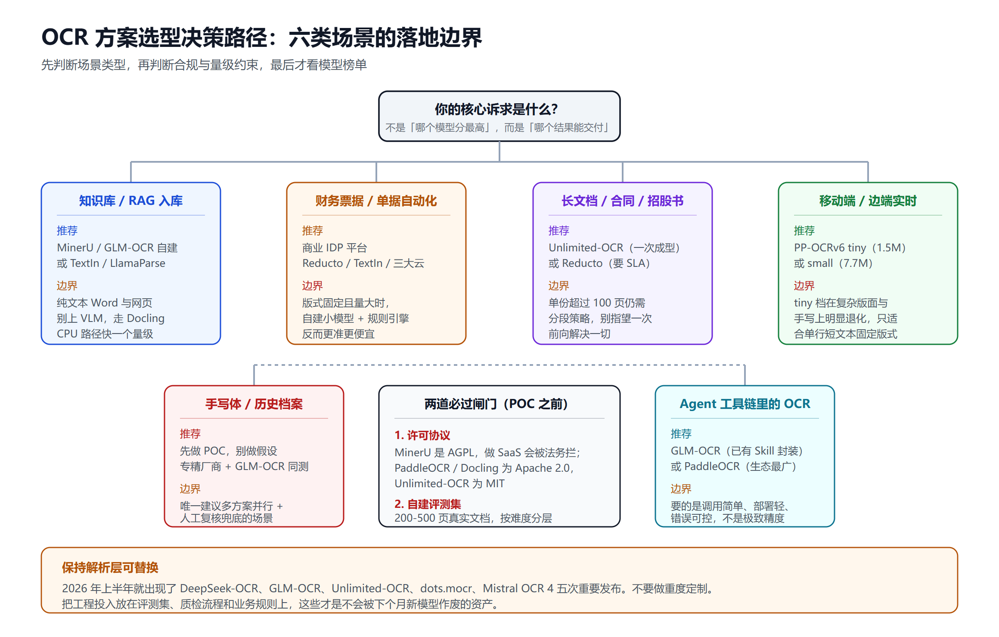

2026 OCR 选型手册：12 个开源模型 + 10 家商业 API 的成本、精度与落地边界
序言：同一份 PDF，提取价格可以差 80 倍
先看一组 2026 年的公开报价。
三大云厂商（AWS Textract、Azure Document Intelligence、Google Document AI）的纯文本提取，都稳定在每千页 1.5 美元左右。但只要你把 API 从"给我文字"换成"给我结构化字段"，价格立刻跳到每千页 15 到 50 美元。2026 年公开列表价的完整区间是每千页 0.6 到 50 美元——决定你账单的不是你选了哪家厂商，而是你调了哪个接口（来源：UD.HK 文档处理成本分析）。
再看另一端。Mistral 在 2026 年 6 月 23 日发布 Mistral OCR 4，价格是每千页 4 美元，批量模式 2 美元，返回的不只是文字，而是带边界框、块类型和置信度的结构化表示（来源：Digital Applied）。而在开源侧，百度 PP-OCRv6 的 medium 档只有 34.5M 参数，一张 A100 上单页 0.13 秒，边际成本约等于电费。
同一份 PDF，从 2 美元每千页到 50 美元每千页，跨度 25 倍；把开源自建算进来，跨度轻松超过 80 倍。而这些方案的输出质量，在你的具体文档上可能压根拉不开对应的差距——也可能拉开得远比价格更狠。
这就是这篇选型手册要解决的问题：在 2026 年这个 OCR 技术栈刚刚被重写完的时间点，怎么在 12 个开源模型和 10 家商业 API 之间做出一个不后悔的决定。
一、先搞清楚你在买什么：这是四层，不是一层
大部分选型踩坑，起因都是把四个不同层次的东西混在一起比较。
- 第一层，OCR 引擎。输入图片，输出文字和坐标。它不关心这段文字是标题还是表格单元格。Tesseract、PP-OCRv6 属于这一层。这层的商品化程度最高，纯文本提取精度早已到 98%+，价格趋近于零。
- 第二层，文档解析（Document Parsing）。输入 PDF 或扫描件，输出保留了阅读顺序、表格行列关系、公式 LaTeX、图文关联的 Markdown 或 JSON。这是 2026 年真正的战场。PaddleOCR-VL、GLM-OCR、MinerU、dots.ocr、Docling 都在这一层。
- 第三层，信息抽取与业务校验（IDP）。输入解析结果，输出业务字段：发票号、金额、合同甲乙方、保单生效日，并做交叉校验（金额加总是否对得上、日期是否合法）。Reducto、LandingAI ADE、合合信息 TextIn 主打这层。
- 第四层，Agent 工作流。抽取完之后自动派单、自动入账、自动生成对账差异报告。这层的价值最高，也最难标准化。

这个分层解释了一个看起来矛盾的市场数据：OCR 大盘 2026 年约 168 至 198 亿美元，CAGR（复合年均增长率） 13% 到 17%；而上层 IDP 市场 2026 年只有 39 亿美元，CAGR 却是 33.8%（来源：Grand View Research OCR 报告、Grand View Research IDP 报告）。
翻译成人话：第一层在贬值，第三第四层在升值，第二层正在被开源迅速填平。 你的选型策略应该跟着这个趋势走——不要在第一层花钱，不要在第二层做自研，把预算和人力压在第三第四层的业务逻辑上。
需要提醒的是，不同机构对 IDP 的口径差异巨大。Fortune Business Insights 给出的 2026 年数字是 141.6 亿美元，2034 年 910 亿美元（来源：Fortune Business Insights）。差异来自"是否把 RPA 平台和行业解决方案算进来"。做预算时别拿这类数字当依据，只看趋势方向。
二、2026 年的技术分水岭：端到端 VLM 吃掉了流水线
如果你上一次认真调研 OCR 是在 2024 年，那么你脑子里的技术图景已经过期了。
旧范式是四段流水线：文本检测（找出文字在哪）→ 文本识别（读出这行是什么字）→ 版面分析（判断这块是标题、正文还是表格）→ 表格结构重建（还原行列）。每一段都是独立模型，独立训练，独立调参。任何一段出错，后面全崩，而且错误定位极其痛苦。
新范式是单个视觉语言模型端到端出结构。输入一页图，直接输出 Markdown、JSON 或 LaTeX。版面理解、阅读顺序、表格结构全部隐含在模型内部完成。
这个转变带来了四个反直觉的结果。
2.1 小模型正面击败千亿大模型
这是 2026 年最值得记住的事实：
- PaddleOCR-VL-1.5 只有 0.9B 参数，OmniDocBench v1.5 综合准确率 94.5%，超过上一代 SOTA（来源：PaddleOCR-VL-1.5 模型卡）
- 智谱 GLM-OCR 同样 0.9B（0.4B CogViT 视觉编码器 + 0.5B GLM 解码器），OmniDocBench v1.5 拿到 94.62，排名第一（来源：GLM-OCR 技术报告）
- 最极端的是 PP-OCRv6 的 medium 档，仅 34.5M 参数，在 OCR 任务上超过了 Qwen3-VL-235B 和 GPT-5.5 这类主流通用视觉语言模型（来源：PaddleOCR Releases）
原因不神秘：文档解析是一个输出空间高度受限的任务。你不需要模型懂物理常识和多轮推理，只需要它把像素准确映射到字符和结构标签。通用大模型的绝大部分参数在这个任务上是纯浪费，还额外带来幻觉风险。有论文直接点名了通用 VLM 在专用 OCR 场景的三重问题：幻觉、定位不精确、算力成本高到不合理（来源：arXiv 2606.13108）。
这条规律和我们在 专用小模型与大模型的共存格局 里讨论过的判断完全一致：任务越窄，小模型的性价比优势越极端。
2.2 光学压缩：把文字当图片存
2025 年 10 月 DeepSeek 发布 DeepSeek-OCR，提出了 contexts optical compression（上下文光学压缩）这个新范式。核心思路反直觉到有点离谱：既然一页文字渲染成图片后编码成的视觉 token 比原始文本 token 少得多，那能不能把长文本"拍成照片"来省 token？
实验数据：当文本 token 数在视觉 token 数的 10 倍以内时，解码（OCR）精度达到 97%；压缩比拉到 20 倍，精度仍有约 60%（来源：arXiv 2510.18234）。一个 1024×1024 的页面原本约 4096 个 token，压到 256 个视觉 token。
这件事的意义远超 OCR 本身——它给长上下文提供了一条全新的工程路径。相关讨论可以参考 长上下文 LLM 的 1200 万 token 工作流。
但要注意，这个范式存在实质性学术争议，后面第六节会详细说。
2.3 长文档一次成型
2026 年 6 月 22 日，百度以 MIT 协议开源 Unlimited-OCR，3B 总参数 / 500M 激活的 MoE 模型，把 DeepSeek-OCR 的思路又推进了一步。
它的关键创新叫 R-SWA（Reference Sliding Window Attention）：每个生成的 token 仍然能看到全部视觉参考 token 和 prompt，但对已生成的输出只回看最近 128 个 token。这个设计模拟了人类的"软遗忘"，让 KV cache 在整个解码过程中保持恒定大小（来源：The Decoder）。
结果是 40 页以上的 PDF 一次前向解析完成，不掉速、不爆显存。OmniDocBench v1.5 得分 93.23（比 DeepSeek-OCR 基线高 6.22 分），v1.6 得分 93.92，在开源端到端方案里是 SOTA（来源：MarkTechPost）。
对于合同、招股书、技术标准这类几十页起步的长文档，这是一个体验层面的质变——不再需要自己切页、拼接、修补跨页表格。
2.4 图形也能结构化
小红书 hilab 在 2026 年 3 月 19 日发布 dots.mocr，除了多语种文档解析 SOTA，还能把图表、UI 布局、科学插图直接转成 SVG 代码，同时保持与 Qwen3-VL-4B 相当的通用视觉能力（来源：dots.mocr GitHub）。
这意味着 PDF 里的柱状图不再只能截图存下来，而是可以变成可查询、可再编辑的结构化数据。对财报分析、研报入库这类场景是直接的能力扩容。
三、开源阵营：12 个模型逐个点名
先说一个容易被忽略的产业事实：这一轮开源 OCR 几乎是中国团队的主场。 百度、智谱、DeepSeek、小红书、上海 AI Lab、腾讯优图，占据了开源榜单的绝大部分席位。这和我们在 中国大模型的蒸馏战争 里观察到的开源策略是同一套逻辑：用开源占生态位，用云服务和行业方案收钱。
按技术路线分三派。
3.1 专用解析小模型派（主流选择）
| 模型 | 出品方 | 参数 | 关键特征 | 许可 |
|---|---|---|---|---|
| PaddleOCR-VL-1.6 | 百度飞桨 | 0.9B | v1.5 已达 OmniDocBench 94.5%，表格/公式/文本全面提升 | Apache 2.0 |
| PP-OCRv6 | 百度飞桨 | 1.5M / 7.7M / 34.5M 三档 | 50 语种单模型；OpenVINO 下 CPU 提速 5.2×，Apple M4 提速 6.1×；工业场景（数码管、点阵字、轮胎印字）专项优化 | Apache 2.0 |
| GLM-OCR | 智谱 z.ai | 0.9B | OmniDocBench v1.5 排名第一（94.62）；结构优先输出 Markdown/JSON/LaTeX；100+ 语种；已上 Ollama 与 transformers 主干 | 开源 |
| dots.ocr | 小红书 hilab | 1.7B LLM | 单模型统一版面检测与内容识别，阅读顺序好；公式识别追平更大模型 | 开源 |
| dots.mocr | 小红书 hilab | 约 4B 级 | 图表/UI/插图直转 SVG；保留通用视觉能力 | 开源 |
| MinerU 2.5 / 3.4 | 上海 AI Lab OpenDataLab | 1.2B | 表格、公式、中日韩文字最强；RAG 生态首选；3.4 版重点优化模型下载、缓存复用、多环境部署 | AGPL |
| Granite-Docling | IBM | 小参数量 | Apache 2.0 商用最友好，企业合规压力小；多模态 RAG 教程完备 | Apache 2.0 |
| GOT-OCR 2.0 | 学术团队 | 580M | 端到端统一 OCR 的早期代表，仍是重要基线 | 开源 |
| Youtu-Parsing | 腾讯优图 | — | 粗粒度生成元素位置与顺序，再辅以语义感知，图文表混排场景有优势 | 部分开放 |
选型速判：
- 只要 CPU、要极致轻量、要边端部署 → PP-OCRv6 tiny/small
- 要综合精度最高、显存有限 → GLM-OCR 或 PaddleOCR-VL
- 要中文表格和公式最准、要 RAG 现成生态 → MinerU（细节可参考 MinerU 深度解析）
- 商用合规要求严格、不能碰 AGPL → Granite-Docling 或 PaddleOCR 系
3.2 光学压缩派（长文档场景）
| 模型 | 出品方 | 参数 | 关键特征 |
|---|---|---|---|
| DeepSeek-OCR | DeepSeek | 3B MoE / 570M 激活 | 光学压缩范式开创者；10× 压缩下 97% 精度 |
| Unlimited-OCR | 百度 | 3B MoE / 500M 激活 | R-SWA 恒定 KV cache；40+ 页一次前向；OmniDocBench v1.6 93.92；MIT 协议 |
这两个更像"研究成果顺便能用"，而不是"开箱即用的生产工具"。DeepSeek-OCR 官方测试环境要求 NVIDIA GPU 显存 15GB 以上（RTX 4090、L40S、A100、H100），磁盘约 30GB。上手前请确认你的场景真的需要长文档一次成型，否则第 3.1 节的方案工程成熟度高得多。
3.3 工程工具链派（不是模型，是流水线）
| 项目 | 出品方 | 定位 |
|---|---|---|
| Docling | IBM | Python 优先的文档转换库，格式支持广，纯 CPU 可跑，与 LangChain 生态整合顺畅 |
| Marker | 社区 | 速度导向的 PDF 转 Markdown 工具，简单文档性价比高 |
| olmOCR | AI2 | 面向大规模语料清洗，学术开放度高 |
| Tesseract | Google 系遗产 | 传统引擎，20 年积累，中文和复杂版面已明显落后，但在极简场景（单行车牌、印刷体票据）仍够用且零成本 |
这层容易被低估。很多项目失败不是因为模型选错，而是因为没有做好格式适配、批处理调度、失败重试和质检抽样。 Docling 之所以在企业里份量重，恰恰是因为它把这些工程琐事包好了。
四、闭源阵营：10 家商业 API 分四个梯队
4.1 第一梯队：Agentic 文档平台（高毛利层）
这类不卖 OCR，卖"文档工作流结果正确"。
| 服务 | 关键卖点 |
|---|---|
| Reducto | 多轮次视觉优先流水线，编排多个前沿模型与自研模型，带 agentic 自纠错；医疗场景抽取准确率 99.24%，累计处理超 40 亿页；支持云、VPC、本地和气隙部署；客户含 Harvey、Scale AI、Vanta 及 Fortune 10 企业 |
| LandingAI ADE | Agentic Document Extraction，医疗合规场景积累深 |
| LlamaParse | RAG 生态原生，Agentic 模式在 ParseBench 五个维度上综合 84.9%，是唯一在五个维度都不掉队的方案；Premium 档每千页 45 美元 |
| Unstructured | 格式覆盖最广，管道化能力强，RAG 老牌选择 |
注意 LlamaIndex 自家发布的 ParseBench 结论其实很诚实：测了 14 种方法，没有任何一种在所有维度都好（来源：LlamaIndex ParseBench）。这是整个行业最实用的一句结论。
4.2 第二梯队：性价比杀手
| 服务 | 价格 | 说明 |
|---|---|---|
| Mistral Document AI（OCR 4） | 4 美元/千页，批量 2 美元 | 2026 年 6 月 23 日发布，返回边界框、块类型、置信度；明确以"匹配或超过传统 OCR 厂商，价格只是零头"为定位 |
| Mathpix | 按量 | 数学公式和科学文献的专精选手，STEM 场景仍难替代 |
Mistral 这条线值得单独留意。它把"高质量结构化解析"的价格锚点从每千页 15 到 45 美元直接拉到 2 到 4 美元。对于已经在用三大云结构化抽取接口的团队，这是一次值得重新算账的价格重置（来源：Eden AI 对比分析、PyImageSearch 技术评测）。
4.3 第三梯队：三大云默认选项
| 服务 | 纯文本提取 | 结构化抽取 |
|---|---|---|
| AWS Textract | 约 1.5 美元/千页 | 高 10 到 30 倍 |
| Azure Document Intelligence | 约 1.5 美元/千页 | 高 10 到 30 倍 |
| Google Document AI | 约 1.5 美元/千页 | 高 10 到 30 倍 |
三家在打印体文本上的精度都非常好，SLA、合规资质、区域覆盖是它们真正的护城河。如果你的文档都是印刷体、且你已经在某个云上，直接用它的 OCR 接口是最省事的正确答案，别折腾（来源：Handwriting OCR API 评测）。
但手写体是它们的软肋。手写场景要单独做 POC，别拿印刷体的准确率去做假设。
4.4 第四梯队：中国厂商与通用大模型
| 服务 | 定位 |
|---|---|
| 合合信息 TextIn xParse | 解析 + 抽取 + 坐标回溯三件套。坐标回溯这个功能很关键：能让用户在原文档里看到大模型引用的片段位置，直接对抗幻觉。公开案例显示技术文档检索召回率从 58% 提升到 82% |
| 腾讯云知识引擎 OCR 大模型 | 基于优图自研多模态文档解析大模型，官方称识别准确率提升 30%，图文表混排场景有优势 |
| Gemini 3.x Flash / GPT-5.5 | 原生读 PDF，语义理解和跨表追踪强，成本极低。但两个坑：一是对扫描版 PDF 默认不走 OCR（Vertex AI 文档明确写了 default off），二是幻觉和定位不准，不适合金额、身份证号这类零容错字段 |
用通用大模型做 OCR 的正确姿势是两段式：先用专用模型拿到高保真结构化文本，再用大模型做语义理解和字段抽取。直接让大模型端到端读扫描件，是把幻觉风险引进了数据管道最上游——相关风险链条可以参考 AI 幻觉的责任链。
五、成本模型：自建的盈亏平衡点在哪
这是选型里最容易拍脑袋的部分。给一个可以直接套的算法。
商业 API 侧成本 = 页数 × 单页价。线性，无固定成本，无运维人力。
自建侧成本 = GPU 租金或折旧 + 运维人力 + 上线周期机会成本。固定成本高，边际成本趋零。
关键变量是月处理页数和是否必须数据不出境/不出内网。

几个可以直接用的经验判断：
- 月处理量 10 万页以下：几乎必然应该用 API。这个量级下自建的 GPU 和人力成本远超 API 账单，而且你还要承担模型升级、显存 OOM、批处理堆积这些运维负担。
- 月处理量 100 万页以上：自建通常划算，尤其在用 PP-OCRv6 这类小模型可以纯 CPU 跑的情况下。这时候真正的成本是人，不是卡。
- 有硬性数据合规要求（金融、医疗、政务、军工）：不算成本，直接自建或选支持气隙部署的商业方案。这条压倒经济性。
- 文档类型极度多样且持续变化：倾向商业 Agentic 平台。它们的多轮次自纠错和持续模型更新，是你自建团队很难复制的。
还有一笔隐性成本必须算进去：质检。无论哪个方案，生产环境都需要抽样人工复核和异常告警。这部分工作量和方案选择关系不大，但很多预算里根本没有它。这类隐性开销的系统性梳理可以参考 Agent 治理与可观测性的隐藏成本。
另外，自建路线的推理框架选择直接影响吞吐和显存效率，vLLM、SGLang、TensorRT-LLM 的取舍可以看 LLM 推理框架横评；如果需要统一管理多个 OCR 模型的服务化部署，Xinference 部署实践 里的方案可以直接复用。
六、精度真相：榜单 90 分之后，你的扫描件为什么还是会崩
6.1 基准已经饱和
过去一年出现了 20 多个开源文档解析模型，但整个领域几乎只在 OmniDocBench 这一个数据集上刷分——一个 1355 页的人工标注集，而且头部分数已经普遍饱和在 90% 以上（来源：arXiv 2605.07492）。
这意味着：
- 榜单第一和第五之间差 0.5 到 1.5 分，在你的业务文档上几乎没有可观测的差异
- 部分提升来自对基准分布的过拟合，而不是真实泛化能力
- 拿榜单排名当选型依据，是 2026 年最常见的错误
有论文用实验证明了这件事的另一面：纯靠数据工程和训练策略，就能把综合分从 92.98 提到 95.69，超过所有专用解析模型和通用 VLM（来源：arXiv 2604.04771）。也就是说，架构创新在这个阶段的边际收益，已经小于数据质量的边际收益。
6.2 真实世界才是坟场
榜单用的是干净扫描件。你的生产环境是：手机拍的歪照、复印了三遍的合同、屏幕摄影、局部过曝、装订线压住文字、盖章盖在数字上。
学界已经意识到这个断层，专门提出了 Real5-OmniDocBench，针对扫描、倾斜、弯曲、屏摄、光照不均这五类真实物理形变做评测（来源：arXiv 2601.21957）。
对应的数据落差非常残酷：传统 OCR 在真实世界的抽取准确率只有 80% 到 85%，而调优良好的 IDP 系统能做到 99% 以上（来源：AI 文档处理统计汇编）。这 15 个百分点的差距，绝大部分不是模型能力差异，而是前处理、多轮校验和业务规则兜底的差异。
6.3 光学压缩的学术争议
DeepSeek-OCR 的高压缩比确实亮眼，但有研究直接质疑：在高压缩比下，模型的"识别"里有多少是真正的视觉解码，有多少是语言模型在根据上下文猜（来源：arXiv 2601.03714，Visual Merit or Linguistic Crutch?）。
这个质疑对选型有直接影响：如果你的文档包含大量不可预测的字符串（身份证号、订单号、化学式、随机密码、生僻人名），语言模型的先验会变成负担而不是助力。这类场景应该用低压缩比设置，或者干脆用第 3.1 节的专用解析模型，而不是追求压缩率。
6.4 你应该怎么评测
放弃公开榜单，做自己的评测集。最低要求：
- 从生产环境采样 200 到 500 页真实文档，覆盖你的所有版式类型
- 按难度分层：干净印刷体、复杂表格、手写、扫描退化、混合版面，各占一定比例
- 定义业务级指标，而不是字符级指标。关心的不是 CER，而是"发票金额字段完全正确的比例""合同关键条款完整提取的比例"
- 对候选方案跑同一套集合，同时记录延迟、成本和失败率
这套评测集的构建成本大概是 2 到 5 个人日。它能省下的是后面几个月的返工。评测方法论上的通用原则，LLM 评测指南 里有更系统的展开。
七、落地边界：六类场景的选型结论
场景一：企业知识库 / RAG 入库
推荐：MinerU 或 GLM-OCR 自建；若不想运维，用 TextIn xParse 或 LlamaParse。
理由：这类场景对表格和公式的结构保真度要求最高，而且需要坐标回溯能力来支持"引用溯源"。表格解析错了，检索模型再强也答错，这是 RAG 质量的硬上限。检索侧的配套设计可以看 BM25 与 RAG 混合检索 和 开源向量数据库横评。
边界：如果你的文档主要是纯文本 Word 和网页，别上 VLM，直接用 Docling 的 CPU 路径，速度快一个数量级。
场景二：财务票据 / 单据自动化
推荐：商业 IDP 平台（Reducto、TextIn、三大云的结构化抽取接口）。
理由：这类场景的价值不在"读出文字"，在"字段对得上、金额能核销、异常能拦截"。人工处理单份成本 5 到 25 美元，AI 降到 2.88 到 4 美元，降幅 60% 到 80%；平均处理时长降低 60% 到 70%，最佳实践的发票周期改善达 82%。金融保险占 IDP 市场 32.7%，Fortune 250 中 63% 已部署。这些数字说明该场景的方案已经成熟，自研没有优势。
边界：票据版式高度固定且量大（比如只处理一种自家系统导出的对账单），自建小模型 + 规则引擎反而更准更便宜。
场景三：长文档合同 / 招股书 / 技术标准
推荐：Unlimited-OCR（需要一次成型、跨页表格完整）或 Reducto（需要 SLA 和合规）。
理由：几十页起步的文档，切页拼接是主要错误来源。R-SWA 这类恒定 KV cache 方案正是为此设计。
边界：单份文档超过 100 页，仍然需要做分段策略，不要指望一次前向解决一切。
场景四：移动端 / 边端实时识别
推荐：PP-OCRv6 tiny（1.5M）或 small（7.7M）。
理由：这是当前唯一能在手机和嵌入式设备上跑出可用体验的路线。OpenVINO 下 CPU 提速 5.2×，Apple M4 上 tiny 档提速 6.1×。工业场景的数码管、点阵字、轮胎印字都有专项优化。
边界：tiny 档在复杂版面和手写上会明显退化，只适合单行、短文本、固定版式。
场景五：手写体 / 历史档案
推荐：先做 POC，别做假设。三大云在手写上普遍不如印刷体，专精厂商（Handwriting OCR 类服务）和 GLM-OCR 值得一起测。
理由：手写体的方差极大，跨语种、跨书写习惯的泛化能力至今没有可靠的通用方案。这是唯一一个我会建议"多方案并行 + 人工复核兜底"的场景。
场景六：Agent 工具链里的 OCR 能力
推荐：GLM-OCR（已提供 Skill 形式封装）或 PaddleOCR（Dify、RAGFlow、Cherry Studio 都已集成）。
理由：这个场景要的是"调用简单、部署轻、错误可控"，而不是极致精度。PaddleOCR 70k+ Stars 和主流 Agent 平台的原生集成，是最大的实用价值。相关平台选型可以看 Dify 与 Coze、RAGFlow、n8n、FastGPT 横评 和 企业 AI Agent 部署指南。

八、五个高频踩坑
坑一：拿榜单第一当选型结论。 前面说过，饱和榜单上 1 分的差距在你的文档上不可观测。用自己的 200 页评测集决策。
坑二：只算 API 单价，不算接口档位。 同一家厂商，纯文本提取和结构化抽取差 10 到 30 倍。先确认你到底需要哪一层输出，再去比价。
坑三：让通用大模型直接读扫描件。 Gemini 和 GPT 系列对扫描 PDF 默认不启用 OCR，而且在数字和专有名词上会幻觉。正确做法是专用模型出文本、大模型做理解。
坑四：忽略许可协议。 MinerU 是 AGPL，如果你要做 SaaS 对外服务，法务会拦你。Granite-Docling 和 PaddleOCR 系是 Apache 2.0，Unlimited-OCR 是 MIT，商用友好度完全不同。这一步在 POC 之前就要确认，不要等到上线前才发现。
坑五：没有质检和降级路径。 生产环境一定会遇到解析失败和低置信度结果。必须设计：置信度阈值告警、失败重试到备用方案、异常样本进人工队列。可观测性怎么搭可以参考 Langfuse 可观测性指南。
小结
2026 年 OCR 选型的核心判断可以压缩成六句话。
第一，不要在 OCR 引擎层花钱。 纯文本识别已经商品化，开源方案（PP-OCRv6）在多数场景够用且成本趋零。
第二，文档解析层优先用开源。 0.9B 级模型（GLM-OCR、PaddleOCR-VL）精度已达商业水准，中国团队几乎包场，选择余地大，切换成本低。
第三，信息抽取与业务校验层可以花钱。 Reducto、TextIn 这类平台卖的是"结果正确"和"合规部署"，自研难度和持续投入远超预期。
第四，价格锚点已经重置。 Mistral OCR 4 的 2 到 4 美元每千页，让所有还在用每千页 15 美元以上结构化接口的团队都值得重新算账。
第五，榜单不可信，自建评测集不可省。 20 多个模型在同一个饱和数据集上刷分，真实世界的退化文档才是分水岭。
第六，许可协议和质检路径要在 POC 之前定。 这两件事翻车的代价，比模型选错高得多。
最后一句提醒：这个领域在 2026 年上半年就出现了 DeepSeek-OCR、GLM-OCR、Unlimited-OCR、dots.mocr、Mistral OCR 4 五次重要发布。不要做重度定制。 保持解析层可替换，把工程投入放在评测集、质检流程和业务规则上——这些才是不会被下个月新模型作废的资产。
免责声明
本文所有价格、性能与市场数据均来自截至 2026 年 8 月的公开信息，商业 API 定价与开源模型版本变动频繁，实际选型前请以厂商官方文档和最新 Release Notes 为准。文中提及的榜单分数为各方自行公布的测试结果，未经独立复现验证。不同机构对 OCR 与 IDP 市场规模的口径差异巨大，相关数字仅供趋势参考，不应作为投资或预算决策的唯一依据。本文不构成任何投资建议或采购推荐。
参考来源
- Optical Character Recognition Market Size Report, 2026-2033 - Grand View Research
- Intelligent Document Processing Market Report, 2026-2033 - Grand View Research
- Intelligent Document Processing Market Size - Fortune Business Insights
- AI Document Processing Statistics 2026
- AI Document Processing Costs 2026: Azure vs Google vs AWS vs Rossum
- PaddleOCR Releases - GitHub
- PaddleOCR-VL-1.5 - Hugging Face
- PaddleOCR 3.0 Technical Report - arXiv
- GLM-OCR Technical Report - arXiv 2603.10910
- GLM-OCR - GitHub
- DeepSeek-OCR: Contexts Optical Compression - arXiv 2510.18234
- Unlimited-OCR - GitHub
- Baidu's Unlimited OCR processes dozens of document pages in one pass - The Decoder
- Baidu Releases Unlimited OCR, a 3B Model That Keeps the KV Cache Flat - MarkTechPost
- dots.mocr - GitHub
- dots.ocr - Hugging Face
- MinerU - GitHub
- Granite Docling - IBM
- Visual Merit or Linguistic Crutch? A Close Look at DeepSeek-OCR - arXiv 2601.03714
- Towards a Multi-Task 0.9B VLM for Robust In-the-Wild Document Parsing - arXiv 2601.21957
- A Source-Traceable Benchmark across Clean, Degraded, and Real-World Settings - arXiv 2605.07492
- Pushing the Limits of Data-Centric Document Parsing at Scale - arXiv 2604.04771
- From 1.5M to 34.5M Parameters, Surpassing Billion-Scale VLMs on OCR Tasks - arXiv 2606.13108
- Mistral OCR 4 vs Top Document Parsing APIs - Eden AI
- Mistral OCR 4: Document AI for Business Automation - Digital Applied
- Mistral OCR 3 Technical Review - PyImageSearch
- ParseBench: The First Document Parsing Benchmark for AI Agents - LlamaIndex
- Reducto Document Parsing API
- Top 10 document parsing services for RAG pipelines 2026 - Vstorm
- Best handwriting OCR API 2026
- Best Open Source OCR Tools & Models for Developers in 2026 - Unstract
- TextIn xParse 文档解析 - 合合信息
- 知识引擎原子能力产品优势 - 腾讯云
- Vertex AI 文档理解能力说明 - Google Cloud
相关阅读
- MinerU 深度解析：一个 1.2B 小模型，如何成为 Agent 与 RAG 的"文档之眼"
- 专用小模型与大模型的共存格局
- 中国大模型的蒸馏战争
- BM25 与 RAG 混合检索的规模化实践
- 开源向量数据库横评
- LLM 推理框架横评
- Xinference 私有化推理部署实践
- Dify vs Coze vs RAGFlow vs n8n vs FastGPT 横评
- 企业 AI Agent 部署指南
- Agent 治理与可观测性的隐藏成本
- Langfuse LLM 与 Agent 可观测性指南
- LLM 评测指南：MMLU、SWE-bench 与 Arena
- 长上下文 LLM 的 1200 万 token 工作流
- AI 幻觉的责任链
- 商业与开源 TTS 横向对比
- 中英文与方言商业 ASR 横评
推荐搭配装备
善其事，利其器。以下硬件能最大化你的AI体验👇
🔗 通过以上链接购买可支持本站持续运营 🙏